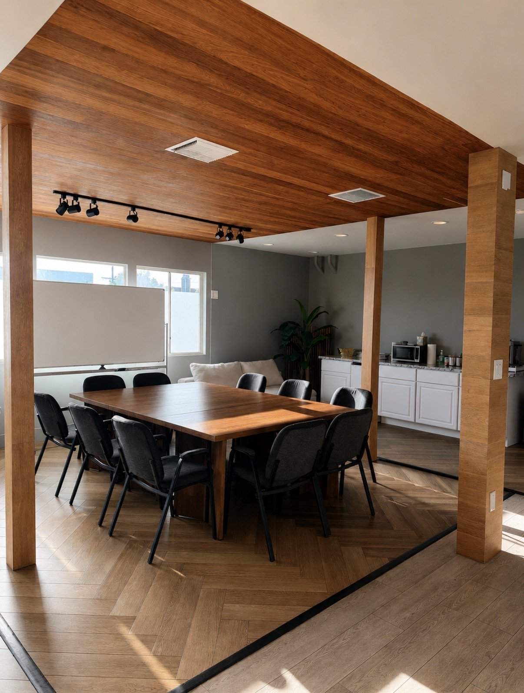
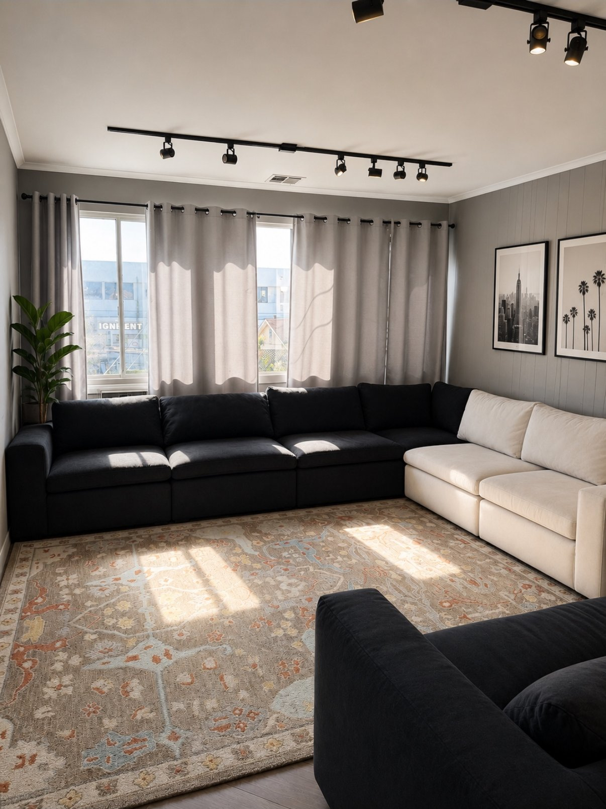

What IOP looks like at Nonno
Our Intensive Outpatient Program is designed for people who need real clinical support but don't need — or can't step away for — full-time residential care. You'll attend structured sessions several days a week while continuing to live at home, work, or stay in our sober living community.
Every plan is built around cognitive behavioral therapy (CBT), individual counseling, and group support, with medication management available where appropriate. We keep caseloads small so your care team actually knows your story.
Who it's for
- Stepping down from residential or detox treatment and need continued structure
- Balancing recovery with a job, school, or family responsibilities
- Looking for a higher level of care than weekly therapy alone provides
- Men and women ready for evidence-based treatment on a flexible schedule

What to expect
- AssessmentFree, confidential intake call to understand your history and goals.
- Personalized scheduleWe build your weekly plan around your job or family commitments — day or evening tracks available.
- Active treatmentIndividual therapy, group sessions, and skills work, 3–5 days a week.
- Step-down & alumni supportAs you stabilize, sessions taper and you transition into ongoing alumni support.
What's included

FAQs
How many hours a week is IOP?
Most clients attend 3–5 sessions per week, roughly 3 hours each. We offer both day and evening tracks so it can fit around a job or school schedule.
Can I keep working while in IOP?
Yes — that's one of the main reasons people choose IOP over residential care. Many of our clients work full-time throughout the program.
Do you accept insurance for IOP?
We accept most major PPO plans. Use the insurance verification form on our homepage and we'll confirm your benefits, usually the same day.